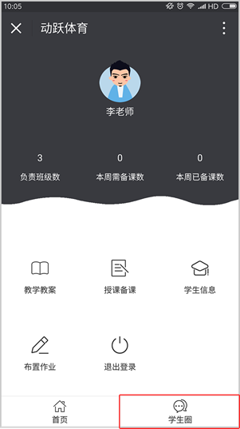
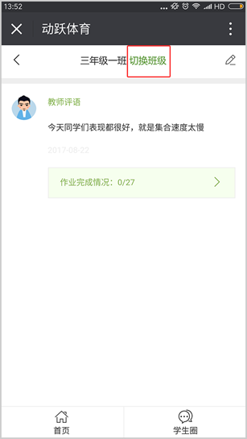
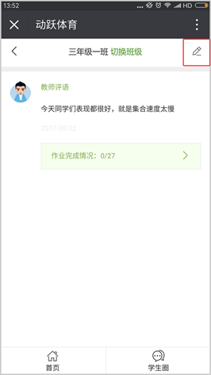
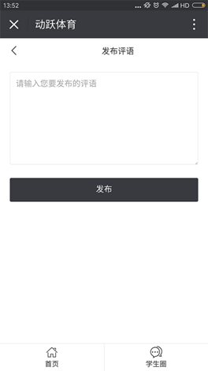
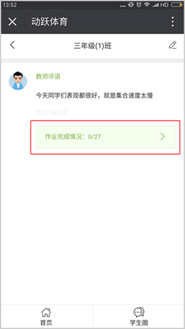
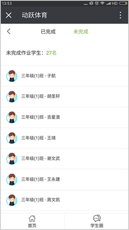

<div class="title">如何发布评语</div>

<div class="on">视频教程：</div>
<div class="youkuplayer" ykVid="XMzU5MjUyMTAyOA"></div>

<div class="on">1.在教师端页面，点击【学生圈】，进入学生圈页面。</div>


<div class="on">2.选择需要评论的班级，点击【切换班级】,可切换教师管理的所有班级。</div>


<div class="on">3.点击右上角的图标，即可进入评语发布页面，编写教师想要对学生写的话语。</div>



<div class="on">4.点击【作业完成情况】，即可查看学生的家庭作业完成情况。</div>



<script id="_youkujs_" type="text/javascript" src="//player.youku.com/jsapi"></script>
<script type="text/javascript" src="../statics/js/each/helpvideo.js"></script>